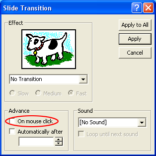
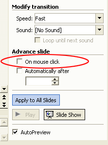

Free
powerpoint
Tutorials
|
Free
powerpoint
Tutorials
|
|
 home home |
Stay at Home and Learn | ||||
Forcing people to click your buttons |
|||||
|
You may have noticed that when your presentation is running, you can click anywhere on the screen to advanced to the next slide, making your buttons somewhat redundant. This is because there is an inbuilt action on each slide for the mouse click. To force people to click the buttons, click the first slide in your presentation. With the first slide displayed in PowerPoint, click Slide Show from the menu bar at the top. From the Slide Show menu, select Slide Transition. You'll see the following small dialogue box appear in PowerPoint 2000:  Uncheck the box at the bottom On mouse click. Then click the Apply to All button at the top. In PowerPoint 2003, scroll down to the bottom of the Task Pane, and
the same area will be there:  Uncheck the box circled in red, in the image above, and then click the Apply to All Slides button. Start your presentation again, and try to click anywhere on the screen
that is not a button. The slide won't advance, as it did before. You
will have to click your buttons to go the next slide.
And that's it for Action buttons! There's a lot more that can be said on the subject, and if you have any programming skills you can even write your own code for them. That, unfortunately, is beyond the scope of this book. One things you can do, however, is to add your own button images for navigation: you don't have to use the ones from the Action Buttons menu. If you have any navigation icons, click Insert > Picture > From File to add your icons to a slide. Add an Action to your new image by right clicking it. Then select Action Settings from the menu. The process is then the same as for the Hyperlink you added.
In the next section, we'll move on to Excel Charts and PowerPoint.
|
||||